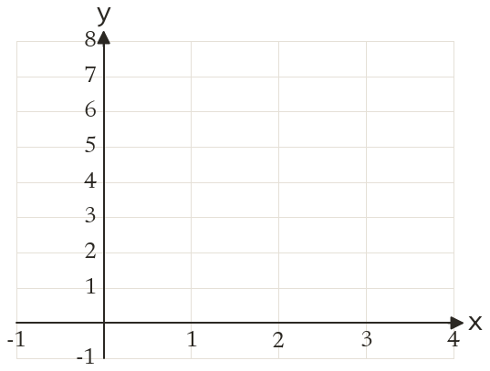
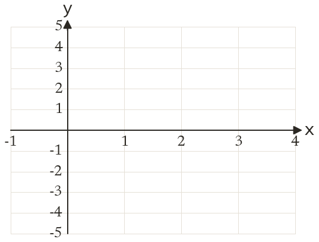
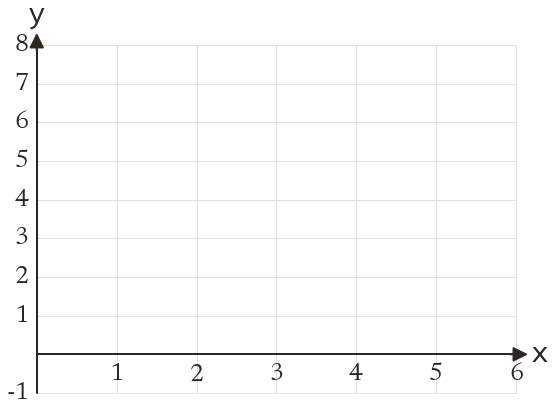
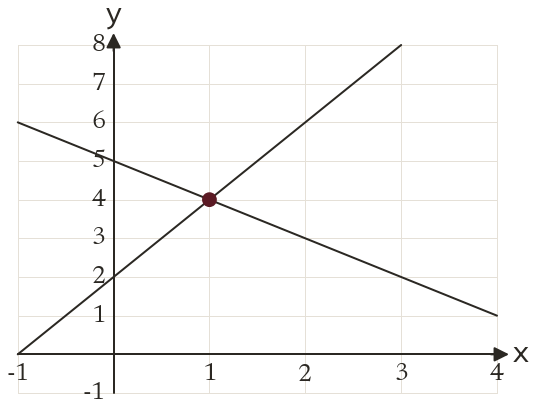
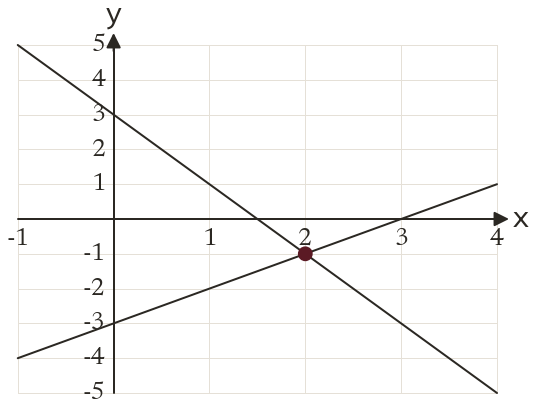
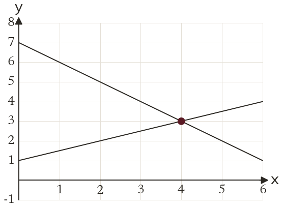

Westonbirt Maths · Simultaneous Equations and Graphs
Graphical Solutions
Name: ______________________ Date: ____________
1
Solve y = 2x + 2 and y = -x + 5 graphically.
2
Solve y = x - 3 and y = -2x + 3 graphically.
3
Solve y = 0.5x + 1 and y = -x + 7 graphically.
4
How many solutions do y = 3x + 1 and y = 3x - 2 have? Explain.
5
How many solutions do y = 2x + 4 and 2y = 4x + 8 have? Explain.
Ext
The lines y = x + 1 and y = -x + 2 cross between grid lines. Find the crossing point. Why might a graph only give an estimate?





